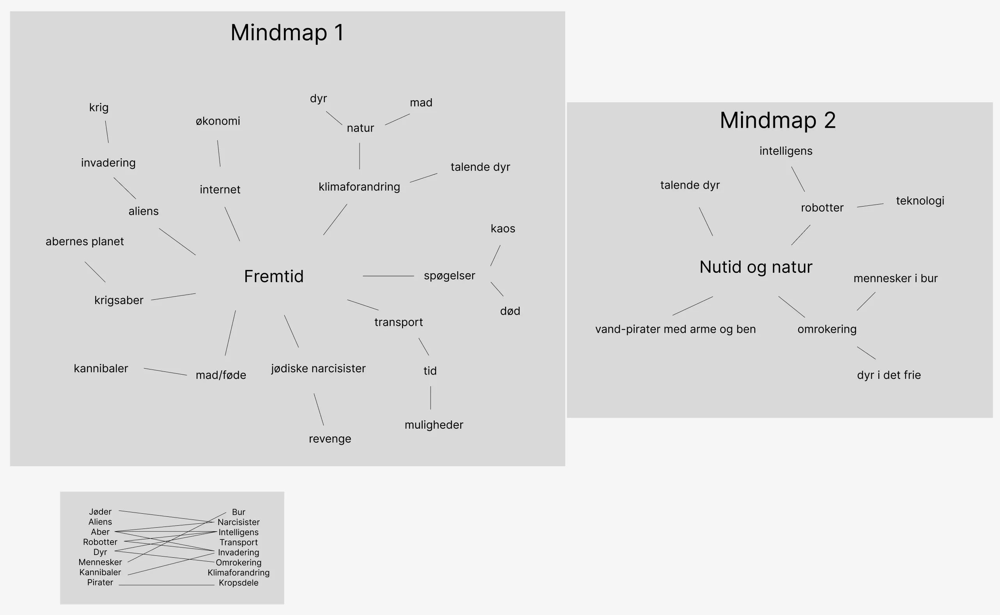
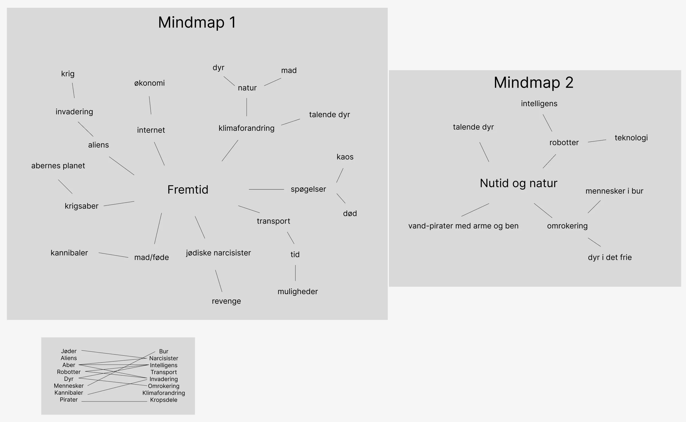
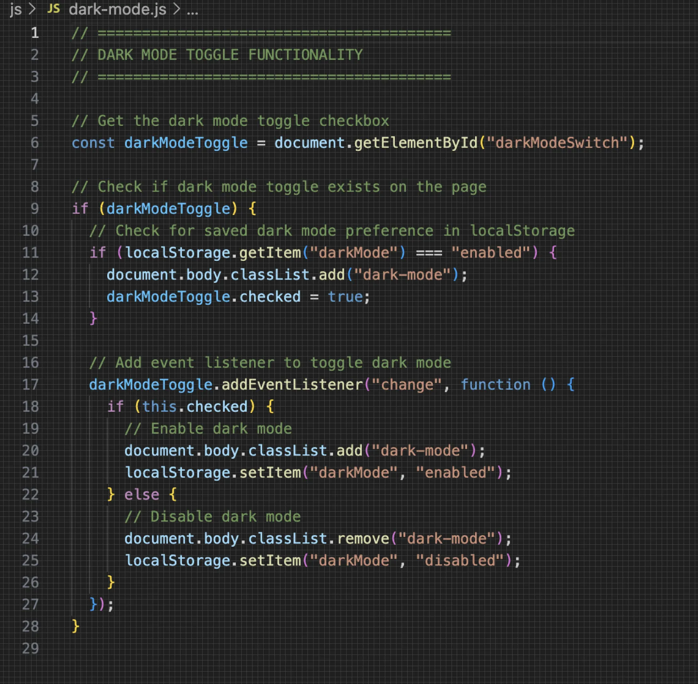
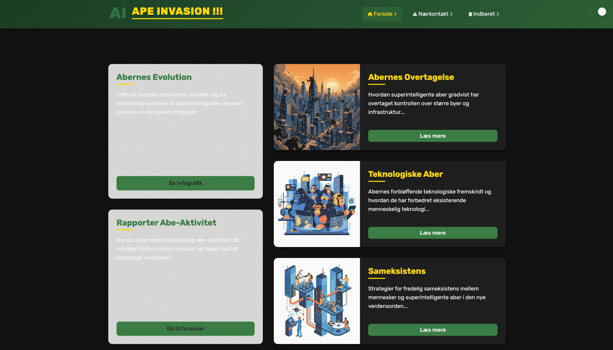

Research & idé
Vi fik til opgave at udvikle et Emergency-site med et humoristisk twist. Her arbejdede jeg med idéudvikling og research.
I tema 4 arbejdede jeg med udvikling af brugergrænseflader med fokus på visuelle UI-elementer, avanceret CSS og grundlæggende JavaScript. Jeg opnåede erfaring med at kombinere design og funktionalitet i et interaktivt website.
Her kan du se de vigtigste skridt i min udviklingsproces fra idé til færdigt produkt.
Vi fik til opgave at udvikle et Emergency-site med et humoristisk twist. Her arbejdede jeg med idéudvikling og research.
Jeg arbejdede med vektorgrafik i Adobe Illustrator for at give brugeren en korrekt visuel forståelse af formålet.

Projektet blev implementeret i HTML, CSS og JavaScript med fokus på interaktivitet, pop-ups og dark mode.
Det færdige produkt blev et responsivt og interaktivt website, der fungerer på både mobil og desktop.
Jeg har lært at arbejde med avanceret JavaScript og vektorgrafik ved hjælp af Adobe Illustrator.

SE MERE OMKRING MIG OG MIT PORTFOLIO
Velkommen til mit portfolio, hvor du kan udforske mere omkring, hvad det vil sige at være multimediedesigner på første semester. Herunder vil du følge hele min proces og alle mine projekter.